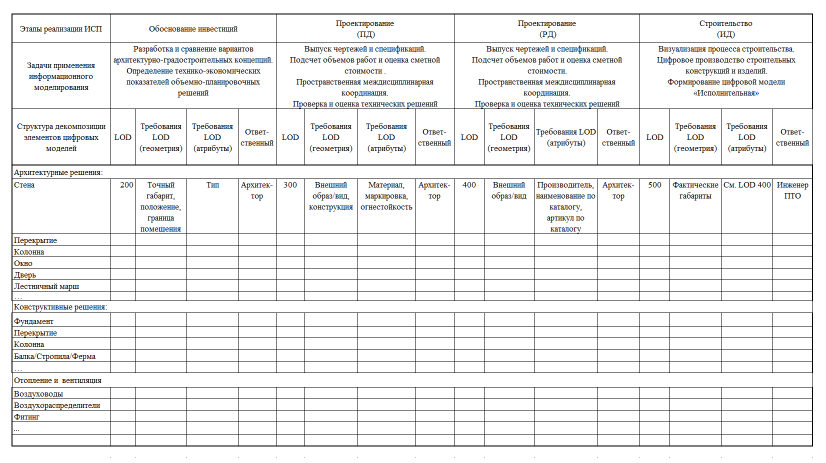
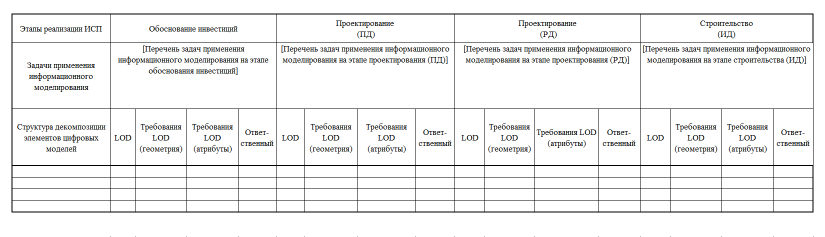

СП 404.1325800.2018 «Информационное моделирование в строительстве. Правила разра»
О документе: разработчики, утверждение, регистрация, ключевые слова
СП 404.1325800.2018
1 ИСПОЛНИТЕЛИ - Акционерное общество «Научно-исследовательский центр «Строительство» -ЦНИИСК им. В.А. Кучеренко, Общество с ограниченной ответственностью «КОНКУРАТОР» (ООО «КОНКУРАТОР»)
2 ВНЕСЕН Техническим комитетом по стандартизации ТК 465 «Строительство»
3 ПОДГОТОВЛЕН к утверждению Департаментом градостроительной деятельности и архитектуры Министерства строительства и жилищно-коммунального хозяйства Российской Федерации (Минстрой России)
4 УТВЕРЖДЕН приказом Министерства строительства и жилищно-коммунального хозяйства Российской Федерации от 17 декабря 2018 г. № 814/пр и введен в действие с 18 июня 2019 г.
5 ЗАРЕГИСТРИРОВАН Федеральным агентством по техническому регулированию и метрологии (Росстандарт)
6 ВВЕДЕН ВПЕРВЫЕ
В случае пересмотра (замены) или отмены настоящего свода правил соответствующее уведомление будет опубликовано в установленном порядке. Соответствующая информация, уведомление и тексты размещаются также в информационной системе общего пользования - на официальном сайте разработчика (Минстрой России) в сети Интернет.
© Минстрой России, 2018
Настоящий нормативный документ не может быть полностью или частично воспроизведен, тиражирован и распространен в качестве официального издания на территории Российской Федерации без разрешения Минстроя России
СП 404.1325800.2018
Дата введения - 2019-06-18
УДК
Ключевые слова: задача применения информационного моделирования, план реализации проекта с использованием информационного моделирования, процесс информационного моделирования, требования заказчика к информационным моделям, управляющий процессом информационного моделирования, уровень проработки, цифровая информационная модель
ИСПОЛНИТЕЛЬ
| АО «НИЦ «Строительство» | АО «НИЦ «Строительство» | |
|---|---|---|
| Руководитель организации- разработчика: | Генеральный директор АО «НИЦ «Строительство» | А.В. Кузьмин |
| Руководитель работ: | Директор ЦНИИСК им. В.А. Кучеренко | И.И. Ведяков |
| Руководитель темы: | Зав. лабораторией автоматизации исследований и проектирования сооружений (ЛАИПС) | Ю.Н. Жук |
СОИСПОЛНИТЕЛЬ
ООО «КОНКУРАТОР»
| Руководитель разработки: | Генеральный директор ООО «КОНКУРАТОР» | М.Г. Король |
|---|---|---|
| Ответственный исполнитель | Старший менеджер ООО «КОНКУРАТОР» | С.Э. Бенклян |
Введение
Настоящий свод правил разработан в соответствии с Федеральным законом от 30 декабря 2009 г. № 384-ФЗ «Технический регламент о безопасности зданий и сооружений» в целях выработки единых подходов к процессу планирования инвестиционностроительных проектов, реализуемых с применением технологии информационного моделирования.
Свод правил подготовлен авторским коллективом: АО «НИЦ «Строительство» ЦНИИСК им. В.А. Кучеренко (руководитель разработки -д-р техн. наук И.И. Ведяков , руководитель темы - канд. техн. наук Ю.Н. Жук , А.В. Ананьев ) и ООО «КОНКУРАТОР ( М.Г. Король , С.Э. Бенклян ).
1Область применения
2Нормативные ссылки
- В настоящем своде правил использованы нормативные ссылки на следующие документы:
- ГОСТ Р 54869-2011 Проектный менеджмент. Требования к управлению проектом
- ГОСТ Р 57310-2016 (ИСО 29481-1:2010) Моделирование информационное в строительстве. Руководство по доставке информации. Методология и формат
- ГОСТ Р 57311-2016 Моделирование информационное в строительстве. Требования к эксплуатационной документации объектов завершенного строительства
- ГОСТ Р 57363-2016 Управление проектом в строительстве. Деятельность управляющего проектом (технического заказчика)
- СП 328.1325800.2017 Информационное моделирование в строительстве. Правила формирования компонентов информационной модели
- СП 331.1325800.2017 Информационное моделирование в строительстве. Правила обмена между информационными моделями объектов и моделями, используемыми в программных комплексах
- СП 333.1325800.2017 Информационное моделирование в строительстве. Правила формирования информационной модели объектов на различных стадиях жизненного цикла
Примечание - При пользовании настоящим сводом правил целесообразно проверить действие ссылочных документов в информационной системе общего пользования -на официальном сайте федерального органа исполнительной власти в сфере стандартизации в сети Интернет или по ежегодному
\_\_\_\_\_\_\_\_\_\_\_\_\_\_\_\_\_\_\_\_\_\_\_\_\_\_\_\_\_\_\_\_\_\_\_\_\_\_\_\_\_\_\_\_\_\_\_\_\_\_\_\_\_\_\_\_\_\_\_\_\_\_\_\_\_\_\_\_\_\_\_\_\_\_\_\_\_\_\_\_\_\_\_\_\_\_\_\_\_\_\_\_\_
\_\_\_\_\_\_\_\_\_\_\_\_\_\_\_\_\_\_\_\_\_\_\_\_\_\_\_\_\_\_\_\_\_\_\_\_\_\_\_\_\_\_\_\_\_\_\_\_\_\_\_\_\_\_\_\_\_\_\_\_\_\_\_\_\_\_
ИНФОРМАЦИОННОЕ МОДЕЛИРОВАНИЕ В СТРОИТЕЛЬСТВЕ Правила разработки планов проектов, реализуемых с применением технологии информационного моделирования
Building information modeling. Project execution planning guide
\_\_\_\_\_\_\_\_\_\_\_\_\_\_\_\_\_\_\_\_\_\_\_\_\_\_\_\_\_\_\_\_\_\_\_\_\_\_\_\_\_\_\_\_\_\_\_\_\_\_\_\_\_\_\_\_\_\_\_\_\_\_\_\_\_\_ информационному указателю «Национальные стандарты», который опубликован по состоянию на 1 января текущего года, и по выпускам ежемесячного информационного указателя «Национальные стандарты» за текущий год. Если заменен ссылочный документ, на который дана недатированная ссылка, то рекомендуется использовать действующую версию этого документа с учетом всех внесенных в данную версию изменений. Если заменен ссылочный документ, на который дана датированная ссылка, то рекомендуется использовать версию этого документа с указанным выше годом утверждения (принятия). Если после утверждения настоящего свода правил в ссылочный документ, на который дана датированная ссылка, внесено изменение, затрагивающее положение, на которое дана ссылка, то это положение рекомендуется применять без учета данного изменения. Если ссылочный документ отменен без замены, то положение, в котором дана ссылка на него, рекомендуется применять в части, не затрагивающей эту ссылку. Сведения о действии сводов правил целесообразно проверить в Федеральном информационном фонде стандартов.
3Термины, определения и сокращения
В настоящем своде правил применены следующие термины с соответствующими определениями:
- 3.1.1 атрибутивные данные
- Существенные свойства элемента цифровой информационной модели, определяющие его геометрию или характеристики, представленные с помощью алфавитно-цифровых символов.Источник: СП 333.1325800.2017, статья 3.1
- 3.1.2 выявление коллизий
- Процесс поиска, анализа и устранения ошибок, связанных в том числе: с геометрическими пересечениями элементов цифровой информационной модели; -нарушениями нормируемых расстояний между элементами цифровой информационной модели; пространственно-временными пересечениями ресурсов из календарно-сетевого графика строительства объекта.Источник: СП 333.1325800.2017, статья 3.3
- 3.1.3 геометрические данные
- Данные, определяющие размеры, форму и пространственное расположение элемента цифровой информационной модели. [СП 333.1325800.2017, статья 3.4]
- 3.1.4 жизненный цикл здания или сооружения
- Период, в течение которого осуществляются инженерные изыскания, проектирование, строительство (в том числе консервация), эксплуатация (в том числе текущие ремонты), реконструкция, капитальный ремонт, снос здания или сооружения.Источник: 1, статья 2 пункт 5
- задача применения информационного моделирования
- Метод применения информационного моделирования на различных стадиях жизненного цикла объекта для достижения одной или нескольких целей инвестиционно-строительного проекта.Источник: СП 333.1325800.2017, статья 3.7
- 3.1.6 заказчик ( здесь )
- Государственный заказчик, застройщик (инвестор), технический заказчик или юридическое лицо, осуществляющее функции технического заказчика.
- 3.1.7 инвестиционно-строительный проект; ИСП
- Комплекс взаимосвязанных мероприятий, направленных на создание объекта (основных фондов), комплекса объектов производственного или непроизводственного назначения, линейных сооружений в условиях временны ́ х и ресурсных ограничений.Источник: ГОСТ Р 57363-2016, статья 3.4
- 3.1.8 инженерная цифровая модель местности; ИЦММ
- Форма представления инженерно-топографического плана в цифровом объектно-пространственном виде для автоматизированного решения инженерных задач и проектирования объектов строительства. ИЦММ состоит из цифровой модели рельефа и цифровой модели ситуации.Источник: СП 333.1325800.2017, статья 3.9.2
- 3.1.9 информационное моделирование объектов строительства
- Процесс создания и использования информации по строящимся, а также завершенным объектам строительства в целях координации входных данных, организации совместного производства и хранения данных, а также их использования для различных целей на всех стадиях жизненного цикла.Источник: СП 333.1325800.2017, статья 3.10
- 3.1.10 исполнитель ( здесь )
- Генеральный проектировщик, субподрядные проектные и проектно-изыскательские организации, генеральный подрядчик, подрядные и субподрядные организации и другие юридические лица, участвующие в процессе информационного моделирования.
- 3.1.11карта процесса
- Представление характеристик процесса, соответствующего поставленной цели, в виде карты.Источник: ГОСТ Р 57310-2016, статья 3.14
- 3.1.12компонент
- Цифровое представление физических и функциональных характеристик отдельного элемента объекта строительства, предназначенное для многократного использования.Источник: СП 333.1325800.2017, статья 3.12
- 3.1.13 нотация моделирования бизнес-процессов; BPMN
- Нотация для создания карты диаграмм бизнес-процессов, которая разработана для легкого понимания всеми пользователями.Источник: ГОСТ Р 57310-2016, статья 3.5
- 3.1.14 обмен информацией
- Процесс, в ходе которого между участниками инвестиционно-строительного проекта происходит обмен структурированными наборами информации в определенных форматах в целях поддержания конкретного требования по предоставлению информации на определенной фазе или стадии процесса информационного моделирования.
- 3.1.15 открытые форматы обмена данными
- Форматы данных с открытой спецификацией. Примечание - Формат IFC (Отраслевые базовые классы) - формат и схема данных с открытой спецификацией. Представляет собой международный стандарт обмена данными в информационном моделировании в области гражданского строительства и эксплуатации зданий и сооружений.Источник: СП 333.1325800.2017, статья 3.14
- 3.1.16 план реализации проекта с использованием информационного моделирования; ПИМ
- Технический документ, который разрабатывается, как правило, генпроектной и (или) генподрядной организацией для регламентации взаимодействия с субпроектными/субподрядными организациями и согласовывается с заказчиком.Источник: СП 333.1325800.2017, статья 3.15
- 3.1.17 сводная цифровая модель
- Цифровая информационная модель объекта, состоящая из отдельных цифровых информационных моделей/инженерных цифровых моделей местности (например, по различным дисциплинам или частям объекта строительства), соединенных между собой таким образом, что внесение изменений в одну из моделей не приводит к изменению в других. Примечание - Основное назначение сводной модели поддержка процессов согласования технических решений и выявления коллизий.Источник: СП 333.1325800.2017, статья 3.9.3
- 3.1.18 среда общих данных; СОД
- Комплекс программно-технических средств, представляющих единый источник данных, обеспечивающий совместное использование информации всеми участниками инвестиционно-строительного проекта. Примечание - Среда общих данных основана на процедурах и регламентах, обеспечивающих эффективное управление итеративным процессом разработки и использования информационной модели, сбора, выпуска и распространения документации между участниками инвестиционно-строительного проекта.
- 3.1.19 требования заказчика к информационным моделям
- Требования заказчика (государственного заказчика, застройщика, технического заказчика или юридического лица, осуществляющего функции технического заказчика), определяющие информацию, предоставляемую заказчику в процессе реализации инвестиционно-строительного проекта с применением информационного моделирования, задачи применения информационного моделирования, а также требования к применяемым информационным стандартам и регламентам.Источник: СП 333.1325800.2017, статья 3.17
- 3.1.20 управляющий процессом информационного моделирования
- Лицо, которому поручено выполнять функции по планированию, организации, распределению ресурсов и контролю процесса информационного моделирования.
- 3.1.21 уровень проработки; LOD
- Набор требований, определяющий полноту проработки элемента цифровой информационной модели. Уровень проработки задает минимальный объем геометрических, пространственных, количественных, а также любых атрибутивных данных, необходимых для решения задач информационного моделирования на конкретной стадии жизненного цикла объекта.Источник: СП 333.1325800.2017, статья 3.18
- 3.1.22 цифровая информационная модель; ЦИМ
- Объектно-ориентированная параметрическая трехмерная модель, представляющая в цифровом виде физические, функциональные и прочие характеристики объекта (или его отдельных частей) в виде совокупности информационно насыщенных элементов.Источник: СП 333.1325800.2017, статья 3.9.1
- 3.1.23 элемент модели
- Часть цифровой информационной модели, представляющая компонент, систему или сборку в пределах объекта строительства или строительной площадки. В настоящем своде правил применены следующие сокращения: ИД - исполнительная документация; ПД - проектная документация; ПТО - производственно-технический отдел; СП 404.1325800.2018 РД - рабочая документация.Источник: СП 333.1325800.2017, статья 3.19
4Общие положения
- обеспечения четкого понимания всеми участниками ИСП целей и задач применения информационного моделирования в рамках конкретного проекта;
- распределения ролей и обязанностей участников ИСП в связи с разработкой и использованием цифровых информационных моделей;
- обеспечения эффективных коммуникационных и координационных процессов деятельности участников ИСП на основе единой СОД, повышения обоснованности и качества принимаемых решений;
- определения информационных потребностей участников ИСП и обеспечения надежного и непрерывного обмена структурированной цифровой информацией между ними;
- определения потребности в материальных, нематериальных и человеческих ресурсах, необходимых для реализации целей и задач применения информационного моделирования в ходе реализации ИСП;
- осуществления контроля процесса информационного моделирования и качества цифровых информационных моделей.
5Порядок и методика планирования проектов, реализуемых с применением технологии информационного моделирования
- Этап I. Анализ целей ИСП и определение соответствующих им задач применения информационного моделирования.
- Этап II. Разработка процессов информационного моделирования.
- Этап III. Разработка структуры и содержания цифровых информационных моделей и процедур обмена информацией.
- Этап IV. Определение потребности в ресурсах, разработка процедур совместной работы, контроля процесса информационного моделирования и качества цифровых информационных моделей.
5.2Этап I. Анализ целей ИСП и определение соответствующих им задач применения информационного моделирования
В таблице 5.1 приведен анализ целей и соответствующих задач применения информационного моделирования для стадии обоснования инвестиций, проектирования и строительства.
Таблица 5.1 Анализ целей и задач применения информационного моделирования на стадиях обоснования инвестиций, проектирования и строительства
| Приоритет | Описание цели | Задачи применения информационного моделирования |
|---|---|---|
| Высокий | Оценка ресурсов участка под застройку для определения оптимального расположения будущих объектов строительства | Анализ местоположения будущего объекта строительства на основе инженерной цифровой модели местности. Визуализация |
| Высокий | Повысить обоснованность архитектурно- градостроительных решений и точность определения предполагаемой (предельной) стоимости строительства | Разработка и сравнение вариантов архитектурно-градостроительных концепций на основе цифровых информационных моделей. Определение технико-экономических показателей объемно-планировочных решений на основе цифровых информационных моделей в целях разработки обоснований инвестиций в строительство. Визуализация |
| Высокий | Повысить точность подсчета объемов строительных работ | Выпуск чертежей и спецификаций на основе цифровых информационных моделей. Подсчет объемов работ и оценка сметной стоимости на основе данных, полученных из цифровых информационных моделей |
| Высокий | Минимизировать количество междисциплинарных коллизий и повысить качество рабочей документации | Пространственная координация и выявление коллизий. Выпуск чертежей и спецификаций на основе цифровых информационных моделей. Визуализация |
| Приоритет | Описание цели | Задачи применения информационного моделирования |
|---|---|---|
| Высокий | Оперативное внесение изменений в проектную и рабочую документацию и быстрый перерасчет объемов оборудования, изделий и материалов | Выпуск чертежей и спецификаций на основе цифровых информационных моделей. Подсчет объемов работ и оценка сметной стоимости на основе данных, полученных из цифровых информационных моделей |
| Средний | Сократить сроки согласования проектных решений | Пространственная координация и выявление коллизий. Проверка и оценка технических решений на основе цифровых информационных моделей. Визуализация |
| Низкий | Оптимизировать комплексный укрупненный сетевой график строительства | Разработка проекта организации строительства, комплексного укрупненного сетевого графика на основе цифровых информационных моделей. Визуализация |
В таблице 5.2 приведено описание задачи применения информационного моделирования «Пространственная междисциплинарная координация и выявление коллизий, в Б.1 - карта процесса реализации этой задачи.
Таблица 5.2 Описание задачи применения информационного моделирования
| Наименование задачи: пространственная координация и выявление коллизий | Наименование задачи: пространственная координация и выявление коллизий |
|---|---|
| Аннотация | Процесс, в котором специализированные программные инструменты выявления коллизий используются для пространственной координации и согласования технических решений. Выявление коллизий осуществляется на основе сводной цифровой информационной модели |
| Наименование задачи: пространственная координация и выявление коллизий | Наименование задачи: пространственная координация и выявление коллизий |
|---|---|
| Преимущества и потенциальные выгоды | Скоординированные в 3D-пространстве проектные решения |
| Преимущества и потенциальные выгоды | Сокращение сроков согласования проектных решений |
| Преимущества и потенциальные выгоды | Повышение качества ПД и РД |
| Преимущества и потенциальные выгоды | Устранение коллизий в проекте до производства строительно-монтажных работ |
| Преимущества и потенциальные выгоды | Снижение стоимости строительства за счет сокращения брака и объема переделок на строительной площадке |
| Требуемые нематериальные ресурсы | Программное обеспечение для разработки цифровых информационных моделей |
| Требуемые нематериальные ресурсы | Программное обеспечение для выявления коллизий |
| Основные компетенции исполнителей | Опыт работы в области проектирования промышленных и гражданских объектов |
| Основные компетенции исполнителей | Знание процессов согласования проектных решений |
| Основные компетенции исполнителей | Знание программного обеспечения для разработки цифровых информационных моделей и выявления коллизий |
| Основные компетенции исполнителей | Знание процедур формирования сводной цифровой информационной модели по объекту строительства |
5.3Этап II. Разработка процессов информационного моделирования
Примечание - Примером определения требований к LOD является процесс выдачи заданий смежным отделам при проектировании. Так, например, инженер-проектировщик по отоплению и вентиляции, получая задания от инженера-конструктора на сбор нагрузок от оборудования и инженера систем электроснабжения на сбор электрической нагрузки, должен в элемент модели «Оборудование» заложить, в том числе, атрибутивные данные о массе и потребляемой мощности, а также геометрические параметры оборудования. Для производства строительно-монтажных работ в элемент модели «Оборудование» (при наличии соответствующих требований заказчика к информационным моделям) включаются данные о монтаже. Также при наличии соответствующих требований заказчика к эксплуатационной модели включаются данные о необходимых эксплуатационных характеристиках оборудования.
Таблица 5.3 - Фрагмент сводной спецификации LOD
5.5Этап IV. Определение потребности в ресурсах, разработка процедур совместной работы, контроля процессов информационного моделирования и качества цифровых информационных моделей
- в человеческих ресурсах, включая определение ролей и функций участников процесса информационного моделирования, а также, при необходимости, их дополнительное обучение;
- материальных ресурсах - аппаратное обеспечение;
- нематериальных ресурсах - программное обеспечение, цифровые каталоги компонентов, прикладные базы данных и т. п.
6Требования к составу и содержанию разделов плана реализации проекта с использованием информационного моделирования
- Раздел 1. Краткое резюме ИСП.
- Раздел 2. Сведения об объекте строительства, сроках реализации ИСП, перечень исходных данных.
- Раздел 3. Ключевые контакты участников.
- Раздел 4. Цели и задачи применения информационного моделирования.
- Раздел 5. Организационные роли и функции сотрудников исполнителя.
- Раздел 6. Карты процессов информационного моделирования.
- Раздел 7. Сводная спецификация LOD.
- Раздел 8. Требования к информационным моделям.
- Раздел 9. Процедуры совместной работы.
- Раздел 10. Процедуры контроля качества.
- Раздел 11. Потребности в материальных и нематериальных ресурсах.
- Раздел 12. Структура цифровых информационных моделей.
- Раздел 13. Результаты процесса информационного моделирования.
- Раздел 14. Стратегия реализации.
- Раздел 15. Приложения.
СП 404.1325800.2018
- Раздел 1 должен содержать общую информацию о назначении плана реализации проекта, а также цели применения технологии информационного моделирования на проекте и другую общую информацию о документе.
- Раздел 2 должен содержать информацию об основных характеристиках объекта строительства, сроках реализации каждого этапа ИСП, а также содержать краткий перечень исходных данных.
- Раздел 3 должен включать контактную информацию о ключевых участниках, которые определены на текущем этапе ИСП.
- Раздел 4 должен включать подробное описание целей и соответствующих им задач применения информационного моделирования и их взаимосвязи с этапами проектирования/строительства/ввода в эксплуатацию.
- Раздел 5 должен содержать описание основных ролей и функций участников процесса информационного моделирования, а также требуемые человеческие ресурсы.
- Раздел 6 должен содержать карты процессов информационного моделирования (обзорный процесс верхнего уровня, описывающий взаимосвязь всех задач применения информационного моделирования на всех этапах ИСП и детальные процессы по каждой задаче применения информационного моделирования).
- Раздел 7 должен содержать сводную спецификацию LOD.
- Раздел 8 должен включать требования заказчика к информационным моделям.
- Раздел 9 должен описывать процедуры совместной работы в СОД, форматы обмена данными, применяемые системы электронного документооборота и управления инженерными данными.
- Раздел 10 должен содержать описание процедур контроля процесса информационного моделирования и качества цифровых информационных моделей.
- Раздел 11 должен отображать технологические потребности в материальных и нематериальных ресурсах (аппаратное и программное обеспечение, каталоги компонентов цифровых моделей, базы данных и т. п.).
- Раздел 12 должен документировать структуру цифровых информационных моделей, правила разделения моделей, систему именования файлов (при необходимости) и общую систему координат.
- Раздел 13 должен описывать результаты процесса информационного моделирования.
- Раздел 14 должен описывать общую стратегию реализации процесса информационного моделирования, которая зависит от типа контракта.
- Раздел 15 является необязательным и может, при необходимости, содержать приложения.
7Основные требования к обмену информацией
8Основные требования к ресурсам, обеспечивающим информационное моделирование
8.1Роли и функции участников ИСП
- сложности реализации проекта;
- числа реализуемых задач применения информационного моделирования на различных этапах ИСП;
- вида объекта(ов) капитального строительства;
- уровня ответственности объекта строительства;
- организационной структуры участника ИСП;
- численности персонала, задействованного в проекте;
- сроков реализации ИСП.
- на уровне организации -управляющим процессом информационного моделирования;
- на уровне подразделения или специальности -координаторами процесса информационного моделирования по отдельным проектным разделам или отдельным строительно-монтажным работам.
- разработка внутренних регламентов, стандартов, методик и процедур по применению технологии информационного моделирования;
- разработка требований заказчика к информационным моделям;
- обеспечение четкого понимания всеми исполнителями целей и задач применения информационного моделирования для данного ИСП;
- координация работ исполнителей по реализации задач применения информационного моделирования, обеспечение надежного обмена информацией, передача результатов процесса информационного моделирования от одного исполнителя к другому на различных этапах реализации ИСП;
- обеспечение максимальной пользы и эффективности от применения технологии информационного моделирования при оптимизации процессов подготовки строительного производства, строительства и ввода в эксплуатацию;
- разработка процедур контроля качества цифровых информационных моделей;
- анализ промежуточных результатов процесса информационного моделирования в целях контроля ключевых показателей ИСП;
- проверка и приемка окончательных результатов процесса информационного моделирования;
- формирование бюджета на требуемое программное и аппаратное обеспечение.
- организация и участие в разработке и актуализации внутренних регламентов, стандартов, методик и процедур применения технологии информационного моделирования;
- организация и участие в разработке ПИМ;
- организация СОД и предоставление регламентируемого доступа заказчику и другим заинтересованным исполнителям ИСП;
- обеспечение надежного обмена информацией;
- организация и участие в разработке процессов по каждой задаче применения информационного моделирования;
- выявление коллизий;
- организация координационных совещаний;
- организация и контроль процесса разработки компонентов цифровых информационных моделей, прикладных баз данных, шаблонов для работы программного обеспечения;
- разработка процедур контроля процесса информационного моделирования и качества информационных моделей;
- проверка компетенций специалистов субпроектных/субподрядных организаций в области информационного моделирования;
- организация процесса обучения;
- участие в анализе конкурсной документации в части требований заказчика к информационным моделям.
- 9 Основные требования к процедурам контроля процесса информационного моделирования и качеству цифровых информационных моделей
- 9.1 При формировании ПИМ следует разработать и описать процедуры контроля процесса информационного моделирования и качества цифровых информационных моделей, которые должны включать, в том числе, проверки, перечисленные в СП 333.1325800.2017 (подраздел 6.4).
АПриложение А. Шаблон плана реализации проекта с использованием информационного моделирования
Титульный лист
[ИМЕНОВАНИЕ ДОКУМЕНТА:]
[НАИМЕНОВАНИЕ ИСП:]
[ИСПОЛНИТЕЛЬ:]
[СОГЛАСОВАНО: (ТЕХНИЧЕСКИЙ ЗАКАЗЧИК, ПРОЧИЕ ИСПОЛНИТЕЛИ).]
[ВЕРСИЯ ДОКУМЕНТА, ДАТЫ РЕВИЗИИ.]
Раздел 1. Краткое резюме ИСП
[Основные цели и задачи применения информационного моделирования.]
Раздел 2. Сведения об объекте строительства, сроках реализации ИСП, перечень исходных данных
- 2.1 Заказчик:
- 2.2 Наименование ИСП:
- 2.3 Местоположение объекта строительства:
- 2.4 Тип контракта:
- 2.5 Краткое описание проекта: [ЧИСЛО ОБЪЕКТОВ, ОБЩАЯ ПЛОЩАДЬ И Т. П.]
- 2.6 Дополнительная информация о проекте: [ОТЛИЧИТЕЛЬНЫЕ ХАРАКТЕРИСТИКИ.]
- 2.7 Шифры проекта
Контрактная информация
Обозначения (шифр)
| Контрактная информация | Обозначения (шифр) |
- 2.8 Календарный план проекта/этапы/контрольные точки
| Стадия/этап/ контрольная точка | Дата начала | Дата окончания | Исполнители |
- 2.9 Исходные данные
[Разместить краткий перечень полученных исходных данных c указанием цифровых форматов (при их наличии), в которых они предоставлены. При необходимости следует разместить перечень недостающих исходных данных и учесть при планировании трудозатраты на оцифровку исходных данных, например растровых геоподоснов].
Раздел 3. Ключевые контакты участников ИСП
| Роль и должность | Наименование организации | Основное контактное лицо | Тел. |
Раздел 4. Цели и задачи применения информационного моделирования
- 4.1 Цели и задачи применения информационного моделирования (исполнителя)
| Приоритет | Описание цели | Задачи применения информационного моделирования |
- 4.2 Перечень реализуемых задач применения информационного моделирования на всех этапах ИСП
| Обоснование инвестиций (включая необходимые инженерные изыскания) | Испол- нитель | Проектирование (включая инженерные изыскания) | Испол- нитель | Строительство | Испол- нитель | Эксплуатация* | Испол- нитель |
|---|---|---|---|---|---|---|---|
| Разработка ИЦММианализ местоположения и инженерно-геологической ситуации | […] | Разработка специализирован- ныхЦИМ (например, по разделам проекта) | […] | Визуализация процесса строительства (4D- моделирование): выявление пространственно- временных коллизий; оптимизация сетевого графика; план-фактный анализ | Планирование технического обслуживания и ремонта | […] | |
| Концептуальное моделирование, сравнение вариантов архитектурно- градостроительных концепций | […] | Проверка и оценка технических решений | […] | Геодезические разбивочные работы | Мониторинг эксплуатационных характеристик | […] | |
| Определение технико- экономических показателей объемно-планировочных решений | […] | Пространственная (3D) координация и выявление коллизий | […] | Геодезический контроль | Управление объектами недвижимости |
| Обоснование инвестиций (включая необходимые инженерные изыскания) | Испол- нитель | Проектирование (включая инженерные изыскания) | Испол- нитель | Строительство | Испол- нитель | Эксплуатация* | Испол- нитель |
|---|---|---|---|---|---|---|---|
| Визуализация | […] | Инженерно- технические расчеты [прочностной анализ…] | […] | Мониторинг охраны труда и промышленной безопасности на строительной площадке | Моделирование чрезвычайных ситуаций | ||
| Проверка и оценка технических решений | […] | Выпуск чертежей и спецификаций | […] | Цифровое производство строительных конструкций и изделий | [Задача №] | ||
| [Задача №] | Подсчет объемов работ и оценка сметной стоимости | […] | ФормированиеЦИМ «Исполнительная» | ||||
| Визуализация | […] | [Задача №] | |||||
| [Задача №] |
\_\_\_\_\_\_\_\_\_\_\_\_\_\_\_\_\_\_\_\_\_\_\_\_\_\_
* Если работы на этапе эксплуатации предусмотрены в рамках реализации ИСП.
Раздел 5. Организационные роли и функции сотрудников исполнителя
- 5.1 [Описать основные роли и функции: управляющего процессом информационного моделирования, координаторов процесса информационного моделирования по отдельным проектным разделам/строительным работам, разработчиков цифровых информационных моделей (проектировщики, инженеры ПТО и др.).]
- 5.2 Персонал для решения задач применения информационного моделирования
| Задача применения информационного моделирования | Подразделение/ отдел | Численность персонала для реализации задачи | Контакты руководителя подразделения/ отдела |
Раздел 6. Карты процессов информационного моделирования
- 6.1 Обзорная карта
[Разместить карту процесса.]
- 6.2 Детальные карты реализации задач применения информационного моделирования
[Разместить карты процессов по каждой задаче.]
Раздел 7. Сводная спецификация LOD
Раздел 8. Требования к информационным моделям
[Описать соответствующие работам исполнителя требования заказчика к информационным моделям.]
Раздел 9. Процедуры совместной работы
- 9.1 Процедура совместной работы
[Описать процедуру (регламент) работы в СОД.]
- 9.2 Координационные совещания
| Тип совещания | Частота | Участники (внутренние и внешние) | Место проведения |
- 9.3 Форматы обмена данными
[Описание форматов обмена как внутри рабочих групп исполнителя, так и c внешними участниками ИСП.]
- 9.4 Системы электронного документооборота и управления инженерными данными
[Перечислить (при наличии) применяемые системы электронного документооборота и управления инженерными данными. Указать контактные данные администраторов этих систем. При необходимости следует приложить регламенты работы в этих системах.]
| Наименования систем электронного документооборота и систем управления инженерными данными | Контактные данные администраторов систем/баз данных |
Раздел 10. Процедуры контроля
- 10.1 Общая стратегия контроля качества
[Описать стратегию контроля процесса информационного моделирования и качества цифровых информационных моделей.]
- 10.2 Виды проверок
| Наименование проверки | Краткое описание | Ответственный | Применяемое программное обеспечение | Частота проведения проверки |
Раздел 11. Потребности в материальных и нематериальных ресурсах
- 11.1 Программное обеспечение, поддерживающее технологию информационного моделирования
| Задача применения информационного моделирования | Применяемое программное обеспечение | Версия | Пользователь (роль, специальность, должность) | Контактные данные службы технической поддержки |
- 11.2 Сетевое (системное) программное обеспечение
| Наименование и версия программного обеспечения | Контактные данные администратора локальной сети |
- 11.3 Локальное аппаратное обеспечение (компьютеры)
| Наименование компьютера | Спецификация | Пользователь (роль, специальность, должность) | Контактные данные службы технической поддержки |
- 11.4 Сетевое аппаратное обеспечение (серверы/оборудование)
| Наименование сетевого ресурса | Перечень общих ресурсов (проектные данные для совместного использования, прикладные базы данных, каталоги компонентов, справочники по нормативным документам и технической документации, архивы и т. п) | Перечень лиц, имеющих права на запись данных |
Раздел 12. Структура цифровых информационных моделей
- 12.1 Разделение цифровых информационных моделей
[Описать или схематично отобразить схему разделения, например по разделам проекта, функциональным частям, и т. п. Цель разделения -обеспечить основу для многопользовательского доступа к модели и осуществления эффективной коллективной работы.]
- 12.2 Базовая система координат
[Описать базовую систему координат и правила координации всех цифровых информационных моделей в соответствии с базовой.]
- 12.3 Структура именования файлов цифровых информационных моделей
[Описать правила именования файлов цифровых информационных моделей. При использовании программного обеспечения, работающего на основе баз данных, данная процедура не обязательна.]
Раздел 13. Результаты процесса информационного моделирования
[Привести список требуемых техническим заказчиком цифровых информационных моделей, их форматы, а также форматы технической документации.]
Раздел 14. Стратегия реализации
[Указать, какие дополнительные меры необходимо предпринять для успешной реализации задач применения информационного моделирования в соответствии с типом контракта.]
Раздел 15. Приложения
[Размещают, при необходимости, значимую информацию по проекту.]
БПриложение Б. Шаблоны характерных процессов информационного моделирования
- Б.1 Пример карты процесса реализации задач применения информационного моделирования на всех этапах ИСП приведен на рисунке Б.1.
Рисунок Б.1

- Б.2 Пример карты процесса реализации задачи применения информационного моделирования «Пространственная междисциплинарная координация и выявление коллизий» приведен на рисунке Б.2.
Рисунок Б.2

Библиография
- [1] Федеральный закон от 30 декабря 2009 г. № 384-ФЗ «Технический регламент о безопасности зданий и сооружений»
- [2] Постановление Правительства Российской Федерации от 12 мая 2017 г. № 563 «О порядке и об основаниях заключения контрактов, предметом которых является одновременно выполнение работ по проектированию, строительству и вводу в эксплуатацию объектов капитального строительства, и о внесении изменений в некоторые акты Правительства Российской Федерации»